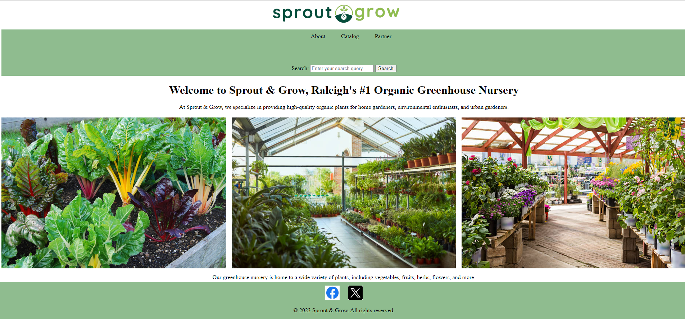

Ashton Jackson
Aspiring Software Engineer
I am an entry-level software engineer currently working as a utility locator.
I'm passionate about becoming a full-time software engineer. I have experience with HTML, and CSS.
I'm continuously learning new technologies to improve my skills.
Featured Projects
View selected projects below
Sprout & Grow
I was in charge of creating the Html and the CSS of the page.
View projectWork Experience
Utility Locator
Stake Center
2024-Present
Identify and map location and depth of utilities such as water, sewer, gas, cable, oil and electric lines.
Education
Wake Tech Community College - Raleigh
Associates Degree in Web development, (2025 expected)
Currently studying Web development along with Software Design Principles.